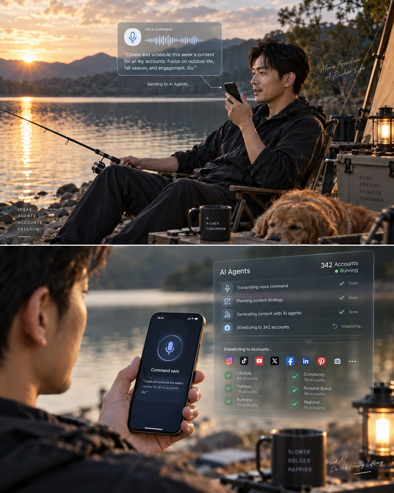
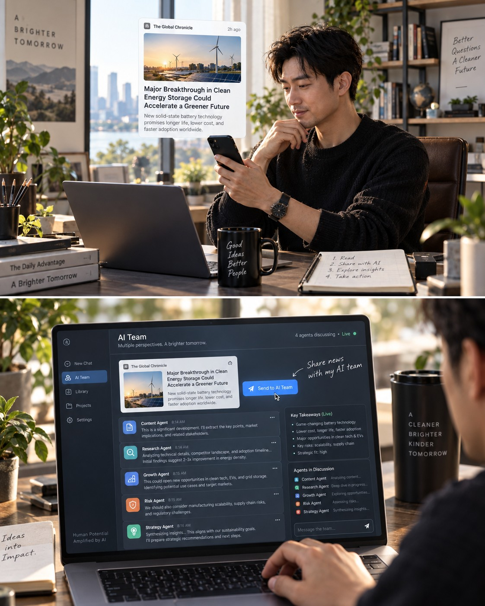
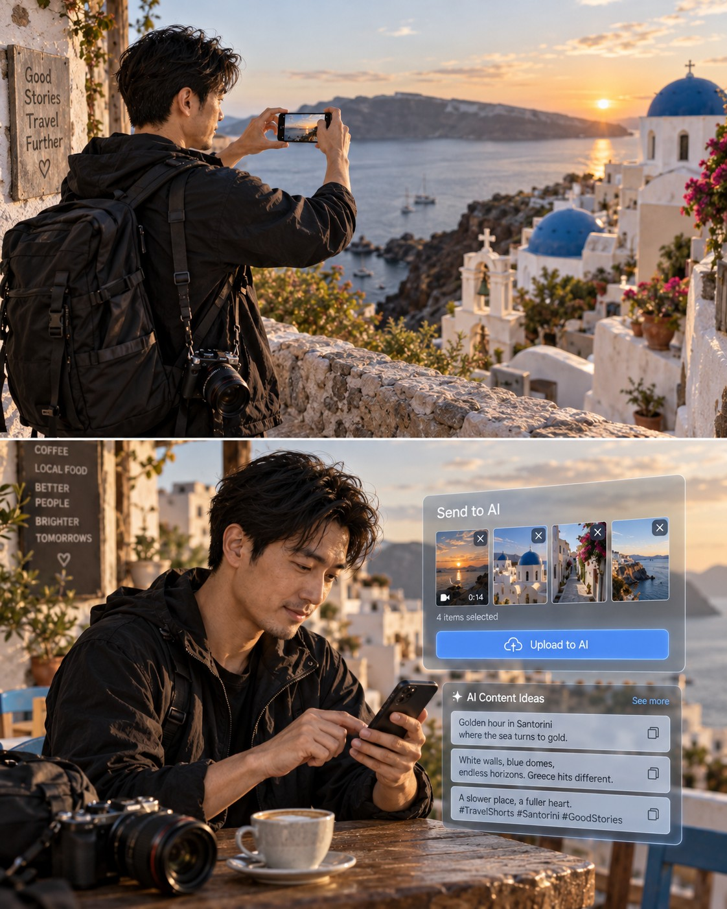

可自运营的虚拟人工作台
黑客松方案
描绘"一人舰队"的未来工作模式，定义一场以"可自运营的虚拟人工作台"为主题的黑客松：12 小时赛制、两个在华东南亚人设、六条高真实度内容、四大核心能力（账号绑定 · 素材收集 · 素材二创 · AI 内容生成），以及一套完整的评分标准。《需求文档 V1.1》作为 L2 路线的标准需求文档随赛题发放，其余配套技术文档不发放，以免影响参赛团队的方案设计。
01 主题愿景：一人舰队时代
1.1 范式转变：从 MCN 到一人舰队
过去的 MCN 机构以人为中心：每个账号背后都是一个真实的人，人设靠真人长期扮演，规模化等于招聘更多人。内容产出的边际成本是"一个人力的时间"，账号数量与团队规模线性绑定——这是内容行业的工业化上限。
未来的社交网络是"一人舰队"：一个人管理众多不同人格的 AI。每个虚拟人有自己的名字、性格、审美、语言习惯与观点立场，人类通过制定目标与策略驱动这些 AI 自我运营——包括自我包装、自我观点表达、内容生产与粉丝互动。规模化的边际成本从"一个人力"变成"一次推理调用"，账号数量与团队规模解耦。
flowchart LR H["人类指挥官
目标 · 策略 · 风险把关"] subgraph F["虚拟人舰队"] P1["人设 A
东南亚女留学生"] P2["人设 B
东南亚男上班族"] P3["人设 N
可扩展"] end T["TikTok
内容 · 互动 · 数据"] D["数据回流
播放 · 粉丝 · 评论"] H -->|"目标与策略"| F P1 --> T P2 --> T P3 --> T T --> D D -->|"自主归因与迭代"| F D -->|"报告与预警"| H
1.2 人类角色的重定义
| 能力 | MCN 时代（以人为中心） | 一人舰队时代（以人格资产为中心） |
|---|---|---|
| 内容生产 | 真人策划、拍摄、剪辑，人类承担全部生产环节 | AI 自主生产，人类从生产者退为目标制定者——"这个人设这个季度要达成什么" |
| 内容把关 | 主编逐条终审，把关即生产的一部分 | 人类作为策略管理者调整方向与投放策略，只审阅异常与高阶决策 |
| 账号运营 | 运营执行者逐号维护，回复评论、跟进热点 | AI 自主完成粉丝互动与热点跟进，人类作为风险把关人处理合规与危机 |
| 规模化方式 | 招聘更多人，边际成本 = 人力 | 复制更多人格，边际成本 ≈ 推理调用 |
1.3 虚拟人的四项自运营能力
主题中"可自运营"四个字是本次黑客松的技术灵魂。一个合格的虚拟人不是一条生成管线，而是具备四项自主能力的数字人格：
- 自我包装：维护并完善自己的人设——视觉形象、账号简介、内容调性随时间自我演进，而非一次性设定；
- 自我观点：基于人设的立场表达。留学生有自己的乡愁与好奇，上班族有自己的职场哲学——不是模板复读机；
- 内容表达：自主决定选题、脚本、画面与发布节奏，覆盖视频与图文两种形态；
- 粉丝互动：对评论与私信的自主响应，人格化的互动是账号"活着"的证据。
工作台的含义：既然是"自运营"，为什么还需要工作台？因为人类需要一个控制面——设定目标、注入策略、观察行为、纠偏风险。工作台不是替代虚拟人干活，而是人类指挥舰队的驾驶舱。这也是"自运营"与"全自动黑盒"的本质区别：自主性越高的系统，越需要清晰的控制与观测界面。
1.4 三个技术支柱
一人舰队的愿景落地在三个技术支柱上，它们也构成后续评分标准的主干：
- 人格一致性：长期记忆 + 人设约束。同一个虚拟人三个月后依然记得自己上周发过什么、说过什么观点，形象与性格不漂移；
- 内容真实度：画面、时效、位置三大真实度。内容要"骗过观众"——看起来像真人在真实的城市过着真实的生活；
- 自运营闭环：数据回流 → 归因 → 策略调整的循环。虚拟人从自己账号的数据中学习什么内容有效，下一次做得更好。
1.5 未来工作场景想象
范式与技术支柱最终要落回具体的生活画面。下面三张概念图描绘了"一人舰队"成熟形态下的三个普通瞬间——它们的共同点是：人类始终留在生活里，工作由一句指令驱动、在云端自主完成。



02 赛题定义
2.1 比赛能力范围
第 1 章描绘的是完整的未来工作图景，但本次 12 小时黑客松只考察生产侧的四个核心能力——这是"虚拟人从无到有产出内容"的最短闭环：
2.2 主题拆解
主题"可自运营的虚拟人工作台"包含三个关键词，各自对应一组验收要点：
| 关键词 | 含义 | 验收要点 |
|---|---|---|
| 虚拟人 | 人格化、可持续的数字身份，不是一次性生成的内容 | 人设卡、人格一致性、跨内容连贯性 |
| 可自运营 | 围绕人设或业务指令自主产出内容，具备闭环能力 | 指令驱动产出、（高等级）反馈注入与自迭代 |
| 工作台 | 人类控制面：目标、策略、观测、纠偏 | 现场可运行的产品，人类可操作的界面 |
2.3 两个虚拟人的人设卡
主办方给定两个人设的身份框架，参赛团队在此框架内填充细节（名字、性格、视觉形象由团队自定）。两个身份刻意拉开了差异——一个校园视角、一个职场视角，一个在上海、一个在深圳，检验系统的多人格、多地域运营能力。下方人设卡的字段结构（身份设定 / 语言习惯对应"基础介绍、语言风格、常用语"，内容领域对应"关注的内容"）与 L2 标准需求文档 M1 的人设字段集对齐，L2 团队可直接沿用同一数据结构，非 L2 团队也可参照填充。
2.4 交付内容明细
| 人设 | 形态 | 数量 | 规格建议 |
|---|---|---|---|
| 人设 A 东南亚女留学生 | 竖屏短视频 | 2 条 含旅游分享 ≥1 | 15~60 秒；口播可选——纯画面 + BGM + 字幕叙事同样有效；分辨率 ≥ 1080P |
| 图文 | 1 组 | 3~6 张图 + 配文 + 位置/时效信息（TikTok photo 模式） | |
| 人设 B 东南亚男上班族 | 竖屏短视频 | 2 条 含旅游分享 ≥1 | 15~60 秒；口播可选——纯画面 + BGM + 字幕叙事同样有效；分辨率 ≥ 1080P |
| 图文 | 1 组 | 3~6 张图 + 配文 + 位置/时效信息（TikTok photo 模式） | |
| 合计 | 6 条内容（每人设视频 2 + 图文 1） | ||
内容主题不限，但必须与各自人设的内容领域一致，且满足真实度三支柱（见 2.5）。每人设 2 条短视频中至少 1 条为旅游分享类——选题与人设的城市基地及周末动线吻合（人设 A：上海周边古镇、秋日城市公园、长三角短途游；人设 B：湾区周末游、广州一日citywalk、深港周边山海线），并鼓励与时效锚点结合（如国庆黄金周前的出游计划）。
口播不是视频的必要条件——纯画面 + BGM + 字幕叙事同样有效，这也是旅游分享视频的主流形态。观点输出（人设的灵魂）可由任一形态承载：口播、字幕文案、图文配文均可。纯画面叙事不等于没有观点——一条"上海秋日 walk"的镜头选择与配乐情绪本身就是人设审美的表达。
2.5 真实度三支柱
期待结果中"极高的真实度"是本次赛题的硬核心，也是评分权重最大的维度。真实度拆解为三个可独立验证的支柱：
比赛时点的时效锚点（2026 年 9 月下旬）
时效真实度的评判依据是内容与比赛时点的绑定深度。以下锚点供选题参考，用得越自然越好：
03 智能等级路线：L1 / L2 / L3
参赛团队必须在开赛时申报智能等级，并在演示中按对应等级的验收标准接受评分。三级路线是自愿选择而非强制爬升——不同等级对应不同的工程风险与得分结构，选择本身就是一次公开的架构决策。
3.1 三级路线对比
| 维度 | L1 机械工程 | L2 文档驱动 | L3 自主智能 |
|---|---|---|---|
| 核心隐喻 | 自动化流水线 | 有方法论的半自动车间 | 数字生命体 |
| 人类输入 | 逐条内容指令，每步人工触发 | 业务指令（素材需求、创作主题） | 仅目标与策略 |
| 选题决策 | 人写选题清单 | AI 提案、人审批 | AI 自主规划 |
| 内容生成 | 固定提示词模板 + 固定工具链 | 策略注入提示词 + 资产库取用 | 自主编排多模态管线 |
| 质量把关 | 人逐条筛选 | AI 预检 + 人工抽查 | AI 自检，异常上报 |
| 迭代能力 | 无（改模板靠人） | 经验卡片入库，人策晋升 | 反馈注入归因，策略自调整 |
| 工程复杂度 | 低 | 中 | 高 |
| 现场风险 | 低（可控） | 中（部分依赖现场） | 高（行为不可完全预测） |
3.2 L1：机械工程方案
一切环节都是确定性的：人设是一份静态文档，脚本是填空的提示词模板，画面生成走固定参数的工具链，输出由人工挑选后手动发布。它的价值在于把"一条内容的生产成本"压到分钟级，适合把精力全部押在内容质量与真实度打磨上的团队。
- 参考架构：人设文档（Markdown）→ 选题清单（人工维护）→ 脚本模板（分镜填空）→ 图/视频生成（固定模型 + 固定参数）→ 人工筛选 → 手动发布；
- 得分结构：自主性最多 8 分，但真实度、人设、完成度、设计四个维度（合计 75 分）全部可以打满——L1 夺冠的路径是"把 6 条内容做到以假乱真"；
- 风险提示：评审会追问"如果人设要发第 100 条内容，你的方案需要多少人工"？L1 的答案决定了它在"可复制性"上的得分。
3.3 L2：文档驱动方案（标准需求文档即 PRD V1.1）
基于标准需求文档的解决方案——L2 的标准需求文档就是随赛题发放的《海外社媒运营工作台 · 需求文档 V1.1》：按文档实现比赛范围内的四个模块，即构成完整的 L2 参考链路——账号绑定（M1 一键识别与人设配置）→ 素材收集（M2 链接收藏与按需搜集）→ 素材二创（M3 素材复刻与地标生成）→ AI 内容生成（M5 视频脚本与图文配文）（模块对照见第 5 章）。
- 参考架构（按 PRD 模块链）：M1 人设注入 → M2 素材收集 → M3 二创与生成（视频：脚本迁就素材库存量 + 缺口自动补齐；图文：以图定文）→ 内容成品交付；
- 得分结构：自主性上限 14 分，四模块链路自动执行、人工只在指令输入与成品确认处介入——这个"人在哪里介入、为什么"的决策本身是设计分；
- 独特优势：有标准需求文档背书，"设计思路与亮点"维度的起点高于另外两级。
3.4 L3：自主智能方案
人类只提供目标和策略，剩余全部由 AI 自主完成，且能够自我迭代。本次比赛不实现发布与数据回收，L3 的迭代验证采用反馈注入机制——反馈可以来自人工评审意见、模拟的发布数据或系统的质量自评，关键是让系统展现出"吸收反馈 → 行为改变"的能力。L3 的验收标准比定义本身更严格——现场必须看到两个证据：
- 闭环证据：现场演示中至少一次"目标输入 → 无人工干预 → 成品输出"的完整链路（允许预先跑通、现场重放，但必须真实执行）；
- 迭代证据：至少一次"反馈注入 → 生成行为发生变化"的对照展示（例如：注入"上一条内容的问题是画面缺少人设城市元素"这条反馈后，下一条内容呈现可观察的调整）。
flowchart LR G["目标输入
人类唯一输入"] --> PL["自主规划
选题 · 脚本"] PL --> CL["自主收集
素材搜集 · 二创"] CL --> CR["自主生产
视频 · 图文"] CR --> QC["自检与交付
成品输出"] QC --> AT["反馈注入
人工评审 · 模拟数据 · 质量自评"] AT -->|"策略自调整"| PL AT -->|"异常上报"| HUM["人类监督
仅异常介入"]
3.5 选级建议与公平性设计
等级与自主性维度的得分上限绑定（L1≤8 / L2≤14 / L3≤20），其余 80 分三个等级完全平等。这套设计的公平性逻辑：
- 低等级不吃亏：砍掉 12 分自主性上限的 L1，换来的是工程确定性——真实度与完成度（合计 45 分）更容易做满。一支把内容做到极致的 L1 队伍，完全可能战胜现场翻车的 L3；
- 高等级有溢价：L3 的 20 分自主性上限是它的独家领地，但溢价的前提是"闭环 + 迭代"两个证据现场成立——为溢价承担工程风险，是自愿的交易；
- 选择即设计：评分表的"设计思路"维度会评估选级决策本身的合理性——为什么你们的团队结构适合这个等级？答得好的队伍加分。
04 评分标准
4.1 设计原则
- 真实度为王：内容真实度以 30 分成为最大单一维度——"骗过观众"是赛题的灵魂，真实度不达标的方案其他做得再好也不是这个赛题的答案；
- 等级自愿：不强制冲 L3。自主性维度按申报等级设得分上限，用分数结构而非规则条文来平衡三级路线；
- 完成度是门槛：交付物中"现场可运行的产品"是硬门槛——现场跑不通，产品完成度维度直接归零，靠预录视频演示的成品仍可参与内容维度的评分，但冠军与其无缘；
- 合规一票否决：使用真实人物肖像、违反平台社区准则的内容，无论技术多先进，直接出局。真实度竞赛的底线是"虚构的真实"。
4.2 六维评分卡（总分 100）
| 维度 | 分值 | 考察内容 |
|---|---|---|
| ① 内容真实度 | 30 | 画面 12 + 时效 9 + 位置 9——真实度三支柱各自独立评分 |
| ② 自主智能程度 | 20 | 自主闭环 8 + 自迭代 6 + 人机分工 3 + 记忆一致性 3（按申报等级设上限） |
| ③ 人设一致性 | 15 | 人设卡还原 5 + 叙事视角与价值观 5 + 个性化表达区分度 5 |
| ④ 产品完成度 | 15 | 现场可运行 10 + 交互与工程质量 5 |
| ⑤ 设计思路与亮点 | 15 | 方法论清晰度 5 + 创新亮点 6 + 可复制可扩展 4 |
| ⑥ 现场演示 | 5 | 演示节奏 3 + 答辩质量 2 |
4.3 维度评分细则（Rubric）
① 内容真实度（30 分）
| 子维度 | 分值 | 评分标准 |
|---|---|---|
| 画面真实度 | 12 |
10~12人物形象跨内容高度一致；光影、景深、噪点自然；无手指/文字/肢体穿帮；含口播的镜头口型与语音同步，纯画面叙事的运镜与转场自然流畅，整体观感接近实拍 6~9整体可信但存在可辨识的 AI 瑕疵（偶发畸变、音画轻微不同步），不影响叙事理解 0~5AI 痕迹明显，或同一人设在不同内容中形象漂移 |
| 时效真实度 | 9 |
8~9内容与比赛时间点强绑定（当季天气服饰、开学季/中秋/国庆等事件），叙事时间自洽 4~7季节与时段正确，但属"任何月份都成立"的通用内容，无当下性证据 0~3季节、服饰、事件与比赛时点明显冲突 |
| 位置真实度 | 9 |
8~9地标/街景可对应真实 POI，招牌语言与城市匹配，地理逻辑合理（通勤动线、城市间距离），图文位置信息一致 4~7城市正确但地标模糊或不可验证 0~3地标张冠李戴或地理逻辑硬伤 |
② 自主智能程度（20 分，按申报等级设上限）
| 子维度 | 分值 | 评分标准 |
|---|---|---|
| 自主闭环 | 8 | 从输入（指令/目标）到成品输出的链路中，无人工干预环节的覆盖程度；每存在一个必要人工断点扣 1~2 分 |
| 自迭代机制 | 6 | 反馈注入 → 归因 → 行为调整的机制是否真实存在并可现场验证（L3 必须有迭代证据，见 3.4；反馈可来自人工评审、模拟数据或质量自评） |
| 人机分工设计 | 3 | 人类介入点的位置与理由是否经过设计——"为什么这里需要人"答得清加分 |
| 记忆一致性 | 3 | 虚拟人是否记得自己发过的内容、说过的观点；现场可抽查（"你上周发的那条讲了什么？"） |
等级与该维度得分的映射关系：L1 上限 8 分（闭环覆盖不到一半，无迭代机制）；L2 上限 14 分（闭环覆盖全链路但保留人工终审）；L3 上限 20 分（闭环 + 迭代证据齐备可争满分）。虚报等级按 3.4 诚实条款处理。
③ 人设一致性（15 分）
| 子维度 | 分值 | 评分标准 |
|---|---|---|
| 人设卡还原 | 5 | 国籍、身份、城市、语言习惯在全部 6 条内容中贯穿一致，无设定冲突（前后说法矛盾、城市张冠李戴）；人设卡字段集参照 2.3（与 L2 标准 M1 对齐） |
| 叙事视角与价值观 | 5 | 第一人称视角稳定；观点符合身份阅历——留学生有留学生的好奇与乡愁，上班族有上班族的务实与自嘲，而非中性的"AI 味"表达 |
| 个性化表达区分度 | 5 | 两个人设的语言风格、审美调性、内容节奏明显可区分——把两条内容的文案互换会立刻违和，即为满分标准 |
④ 产品完成度（15 分）
| 子维度 | 分值 | 评分标准 |
|---|---|---|
| 现场可运行 | 10 | 现场真实执行"输入 → 输出"链路并产出内容（允许对长耗时环节预生成缓存，但核心链路必须现场跑） |
| 交互与工程 | 5 | 界面可用性、操作逻辑、错误处理、演示稳定性 |
⑤ 设计思路与亮点（15 分）
| 子维度 | 分值 | 评分标准 |
|---|---|---|
| 方法论清晰度 | 5 | 架构图、技术选型理由、关键取舍（为什么用 A 不用 B）陈述清晰；交付的"设计思路和亮点总结"文档质量计入本项 |
| 创新亮点 | 6 | 独特解法：真实度控制手段（时效/位置约束注入）、人格记忆设计、自运营闭环的巧思等超出常规拼装的亮点，每项 2~3 分 |
| 可复制可扩展 | 4 | 方法论可否推广：第 3 个人设、第 2 个平台接入的边际成本；"换一个城市/人设需要改什么"答得清加分 |
⑥ 现场演示（5 分）
| 子维度 | 分值 | 评分标准 |
|---|---|---|
| 演示节奏 | 3 | 10 分钟内完成"陈述 + 演示 + 答辩"三段；重点分配合理，不沉溺于技术细节 |
| 答辩质量 | 2 | 对评委提问的回答切中要害，诚实承认局限比强行辩解加分 |
4.4 否决项与扣分项
| 情形 | 处理 | 说明 |
|---|---|---|
| 使用真实人物的面部/声音 | 取消资格 | 含网红、明星、身边真实人物；TikTok 对真实私人肖像的深度伪造直接移除[2] |
| 内容违反 TikTok 社区准则 | 内容分归零 | 暴力、色情、仇恨、虚假危机事件、误导性公众人物内容[1][2] |
| 抄袭或盗用他人作品 | 取消资格 | 直接搬运他人账号内容、盗用其他团队成果 |
| 交付内容少于 6 条 | 每缺 1 条扣 10 分 | 并按缺失比例核减真实度与人设维度得分 |
| 现场无法运行 | 产品完成度归零 | 交付的 6 条内容仍参与内容维度评分 |
| 发布内容未做 AI 标识 | 扣 5 分 | 本次比赛不要求发布；若团队自行将内容发布到 TikTok，须开启"AI-generated content"标注（详见第 6 章） |
| 演示超时 | 每超 1 分钟扣 2 分 | 超 3 分钟强制结束演示 |
4.5 奖项设置
本次黑客松设冠军团队一个，按六维总分排序产生。总分出现同分时，依次以内容真实度、人设一致性维度得分定名次；再同分则由评委合议表决。冠军不设单项奖，真实度、自主性、人设等能力差异已全部体现在六维评分结构中。
4.6 评分流程
- 评委构成（3~5 人）：AI 技术背景与内容运营背景至少各 1 人（评②④⑤与①③），其余评委全维度打分；评委人数为偶数时采用算术平均并保留一位小数；
- 演示流程（每队 10 分钟）：设计思路陈述 2 分钟 → 现场运行演示 5 分钟 → 内容成品放映与答辩 3 分钟；
- 算分规则：每位评委独立打分，5 人时取去掉最高分与最低分后的平均值，3~4 人时直接平均；同分处理见 4.5；
- 评分材料提交：各队赛前提交"设计思路和亮点总结"文档（≤ 3 页），评委在演示前预读，对应⑤维度方法论分。
05 参考方案复用指南
《海外社媒运营工作台 · 需求文档 V1.1》是本次黑客松唯一随赛题发放的参考文档，也是 L2 等级的标准需求文档。发放范围刻意收敛：需求文档只提供功能定义与业务规则（做什么、怎么算做成），不含任何技术架构与实现路径（怎么做）——数字员工、部署、MCP、内容资产等配套技术方案一律不发放，避免对参赛团队的解决方案设计形成锚定。
5.1 发放范围与 L2 模块对照
| 需求文档 V1.1 模块 | 本次比赛 | 说明 |
|---|---|---|
| M1 · 账号管理 | 要求实现 | 账号绑定能力：链接一键识别 + 人设配置（字段集：基础介绍/语言风格/常用语/关注的内容/目标受众，开放扩展）；一键养号为可选加分项 |
| M2 · 素材收集 | 要求实现 | 素材收集能力：链接收藏 + 按需搜集（平台 + 目的地 + 类型 + 时间） |
| M3 · AI 素材生产 | 要求实现 | 素材二创能力：素材复刻（画面内容与风格固定复刻，人物/音频/画面文字可选）+ 地标批量生成（城市+地标+拍摄设备+视角时段+数量规格） |
| M5 · 内容创作 | 要求实现 | AI 内容生成能力：视频四步链路（脚本迁就素材库存量 → 素材匹配 → 缺口自动补齐 → 剪辑方案）+ 图文"以图定文" |
| M4 · 素材管理 M6 · 内容管理 M7 · 发布与排期 | 不要求 | 需求文档中的完整定义仅供理解全局——12 小时内实现不加分也不扣分，评审只考察四大核心能力 |
06 合规红线与自检清单
6.1 TikTok AI 内容标识（若内容实际发布）
本赛题生产的正是 TikTok 政策所定义的"现实主义 AI 生成内容"，若团队在比赛中将内容实际发布到平台，须遵守以下规则：
- 必须打标：发布时开启"AI-generated content"开关，平台会将该标签直接展示在视频画面之上[4]。TikTok 自 2024 年起是首个实施 C2PA Content Credentials 的视频平台，主流 AI 工具的产出文件自带溯源元数据，平台可自动识别并标注——且自动标注的标签发布后不可移除[2]；
- 打标不受罚：官方明确标注不影响视频的分发与推荐[2]——合规不损失流量，没有必要冒险；
- 执法趋严：2025 年下半年 TikTok 移除了 51,618 条未标注合成媒体，对未标注内容的执法力度同比增长 340%[3]；欧盟 AI Act 第 50 条的披露义务也已于 2026 年 8 月生效[3]；
- 绝对禁区：真实私人肖像的深度伪造、涉及未成年人的合成内容、虚假危机事件、误导性公众人物内容——无论是否打标一律禁止[2]。
6.2 内容真实度自检清单
提交前的最后一道工序——建议安排专人按此清单逐条核验全部 6 条内容：
| 支柱 | 检查项 |
|---|---|
| 画面 | 人物面部、发型、体型在 6 条内容中是否同一人（含图文与视频之间） |
| 慢放检查：手指数量与形态、肢体关节、背景行人面部 | |
| 画面内出现的文字（招牌、手机屏幕、书名）是否为可读的正确文字而非乱码 | |
| 口播镜头的口型与语音是否同步；纯画面视频的运镜、转场、BGM 节奏是否自然；光影方向在同一场景内是否自洽 | |
| 时效 | 服饰与天气是否匹配 9 月下旬（初秋过渡，非盛夏/寒冬画面） |
| 是否至少有一条内容绑定当下事件（开学季/中秋/国庆前） | |
| 叙事时间是否自洽（"上周"引用的内容确实在时间线上更早） | |
| 植物状态：9 月下旬无夏花盛放、无落叶深秋（桂花除外） | |
| 位置 | 出现的地标是否真实存在于人设城市（用地图核对） |
| 招牌语言是否匹配城市（上海简体中文为主；深圳可含粤语元素） | |
| 地理逻辑：通勤时间、两地距离、交通方式的合理性 | |
| 旅游视频的跨城市动线：往返交通方式与耗时是否符合实际（如上海→乌镇的大巴/高铁时长）；景区当季状态（9 月下旬非暑期人流高峰） | |
| 图文模式的位置信息与画面是否一致；同一场景多张图的光线角度是否连贯 |
一句话总结这场黑客松：用工程化的手段，让两个虚构的人在真实的时间、真实的城市，过上可信的生活——而人类只说了一句话："这是你的目标。"评委打分的全部秘密，都藏在这句话与现实之间的距离里。